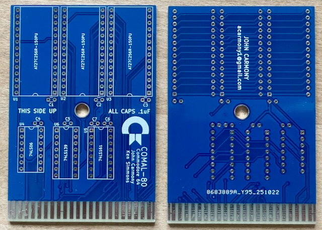

Die Platine wurde vom Originalautor getestet.
Projekt-Homepage • Interakiver Bestückungsplan

10 Stück verfügbar.
| Komponente | Anzahl | Preis | Anbieter |
| 100nF Kondensator | 7 | €0.21 | Mouser • Reichelt |
| 27C256 EPROM | 3 | €7.14 | Mouser |
| 74LS86 | 1 | — | |
| 74LS139 | 1 | €0.52 | Mouser |
| 74LS161 | 1 | €0.77 | Mouser |
| 14-Pin Sockel, schmal | 1 | €0.21 | Reichelt |
| 16-Pin Sockel, schmal | 2 | €0.46 | Reichelt • Mouser |
| 28-Pin Sockel, breit | 3 | €1.50 | Reichelt |
| Teilbausatz | €10.81 |